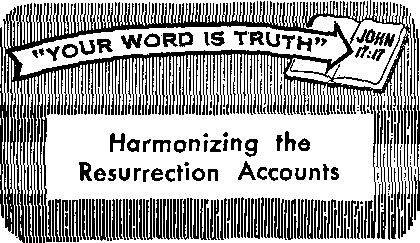

Religion in the Modern World
The Population Explosion
Uncle Sain’s Skyrocketing Budget
Marvel of the Living Cell
JUNE 8. 1963
THE MISSION OF THIS JOURNAL
News sources that are able to keep you awake to the vital issues orwr times must be unfettered by censorship and selfish interests. "Awake!" has no fetters. It recognizes facts, faces facts, is free to publish facts. If is not bound by political ambitions or obligations; it is unhampered by advertisers whose toes must not be trodden on; it is unpreiudiced by traditional creeds. This journal keeps itself free that it may speak freely to you. But it does not abuse its freedom. It maintains integrity to truth.
"Awakel" uses the regular news channels, but is not dependent on them, its own correspondents are on all continents, in scores of notions. From the four corners of the earth their uncensared, on-the-scenes reports come to you through these columns. This journal's viewpoint is not narrow, but is international. It is read in many notions, in many languages, by persons of all oges. Through its pages many fields of knowledge pass in review—government, commerce, religion, history, geography, science, social conditions, natural wonders—why, its coverage is as brood os the earth and as high as the heavens.
"Awake!" pledges itself to righteous principles, to exposing hidden foes and subtle dangers, to championing freedom for all, to comforting mourners and strengthening those disheartened by the failures of a delinquent world, reflecting sure hope for the establishment of o righteous New World.
Get acquainted with "Awake!" Keep awake by reading "Awakel"
Published Simultaneously in the United States by the WATCHTOWER BIBLE AND TRACT SOCIETY OF NEW YORK, INC, 117 Adams Street Brooklyn 1, N, Y., U. S. A.
AND TN EnoLAND EY
WATCH TOWER BIBLE Watch Tower House, The Ridgeway N. H. Knorr, President
Printing thia issue: 3,800.000 4d a
“Awafca!” Is published In th« following 25 languages: Sent [monthly—Afrikaans, Clnyani*. Danish, Dutch, En-glldi, FlwriiAh, French, German, Oreek, Italian. Japanese. Norwegian, Portiigucse, Spanish, Swedish, Taitalog, Zulu. Monthly— Cebu-Visayan, Chinese, Iloeano, Korean, Malayalam, Polish, Tamil, Ukrainian.
Yearly subscription rates
Offices for semimonthly editions
America, U.S,, 117 Adam* St-, Bruoklyn 1, N.Y, Si Australia, 11 Beresford lid., Slrathfieid, N.s.W,
Nc* Zealand, 621 New North Rd., Auckland, fl.W, 1
South Africa, Private Bag 2, P.O. Elandsfonteln, Tvl. 70c Monthly editions cost hair the above rates.
AND TRACT SOCIETY
London N.W, 7, England
Grant Suiter, Secretory copy (Australia, 5d; South Africa, 3j/?c) Remittance? for subset! ntlons should be sent io the office In your country. Otherwise send your remittance to London. Notice <ri expiration is sent at least two Issues before subscription expiree,
CHANGES tfF ADDRESS should reach is thirty days before your moving date. Give us your aid and new address (If possible, yoir old address label). Write Watch Tower, Watch Tower House, The Ridgeway, Loudon N,w. 7, England,
Entered as second-class matter at Brooklyn, N.Y. Printed in England
The Bible translation ised In “Awake!" Is the New World Translation of the Holy Scriptires, 1961 edition When other translations are seed the following symbols will appear behind the citations:
AS — American Standard Version AT - An American Translation AV - Authorized Version (1611) Da - J. N’. Darby’s version
Dy — Catholic Douay version ED - The Emphatic Diaglott JP - Jewish Publication Soc, Le - Isaac Lesser's version
Mo • James Moffatt’s version Ro - J. R, Rotherham's version RS - Revised Standard Version Yff - Kobori. Yu Ung’s version
CONTENTS
Starting in Milwaukee—Then New York 8
Uncle Sam’s Skyrocketing Budget
A Storm of Earth Tremors
Steel in Ancient Greece
Culture Bridge Under Construction
“Your Word Is Truth"
Harmonizing the Resurrection Accounts
Watching the World
Plow
EVERY farmer and gardener knows that for his seed to sprout and thrive he must first prepare the soil. But this truth is not always appreciated in a figurative sense.
For example, have you ever been disappointed as to realizing a certain objective or goal because the one to whom you presented the matter did not respond? Perhaps it was because you did not “plow” before you “sowed.” That is, you may have failed to "soften up,” as it were, neglected to prepare adequately those whom you had hoped to influence.
Yes, plow before you sow. The great Creator, Jehovah God, does, both literally and figuratively. He “plowed” this earth for six long days before he “sowed” man upon it. He also did this in a figurative sense some nineteen centuries ago. He first sent John the Baptist preaching repentance and forgiveness of sins so as to make ready a people for Jehovah, even as had been foretold. Only then did He send his Son, the Messiah, to his chosen people. —Gen. 1:1-28; Luke 1:17.
To plow before you sow is the wise thing to do. In fact, in this respect it might be said that the children of this world are wiser than the children of light. They scheme and plot and plan to prepare the soil so that they might realize their objec-
BEFOREYOU
Sow"
fives. The Communists are especially adept at this. So are the corrupt capitalists who first give gifts to government officials before asking a favor of them, or who provide all manner of lavish entertainment for customers, even to the extent of night cruises with high-priced prostitutes, before broaching the subject of a sale or a contract. They understand the principle but pervert its use.—Luke 16:8.
A Scriptural example of one who employed this principle for ulterior ends is Absalom the son of King David who was famed throughout all Israel for his beauty, and who was ambitious to replace his father as king of Israel. Because of his beauty he was popular, but he did not content himself with this asset. No, he did some “plowing” to prepare the way. By a long-range scheme he built himself up in the minds of the people as a glamorous ruler and champion of the oppressed, thus “stealing the hearts of the men of Israel.” No wonder his insurrection came so close to being a success’-—2 Sam. 15:1-6.
But the Scriptures also contain examples of faithful servants of God following this principle of plowing before sowing. Owe such was Jacob, when faced with the prospect of meeting his brother Esau, who at one time had schemed to kill him. By means of a most generous gift sent in advance, consisting of camels, asses, cattle, goats and sheep, Jacob softened the heart of his brother for the encounter.—Gen. 32: 13-15.
Another Scriptural example is that of Queen Esther. When Mordecai advised her of the plot to kill all the Jews, she carefully planned her strategy. She went in to the king only after she had fasted for days, and doubtless also prayed, and she was attired in her loveliest. When asked what her request was, she did not at once make it known. No, she proceeded to "plow” further, preparing her emperor husband by two banquets for the shock of the news she had for him. She was rewarded for her practical wisdom. Ahasuerus responded exactly as she hoped, if not exceeding her expectations.—Esther 5:1-8; 7:1-6.
When the prophet Nathan was commissioned by Jehovah God to rebuke King David for his great sin, did Nathan upon entering the king’s presence at once proceed to rebuke David? No, Nathan first “plowed.” He prepared the heart of David, softened it by means of an illustration that awakened in him a sense of justice and of righteous indignation. Only then did Nathan “sow,” saying: “You yourself are the man!”—2 Sam. 12:1-15.
Yes, it is not enough that we mean well, that we have a pure motive or that our cause is a good one; we must also use practical wisdom. We must have empathy, ability to sense how the other person would feel if we presented our matter without proper preparation. This is especially imperative when we wish to obtain a favor or have an unpleasant mission to perform. Jacob’s course was in keeping with the advice or observation of King Solomon: “A man’s gift will make a large opening for him, and it will lead him even before great people.”—Prov. 18:16.
Womenfolk in general are more likely to appreciate this fact than are men. They will prepare a fine meal and make themselves look their loveliest, all to put their husbands in a favorable frame of mind before asking them for a new hat, new dress or some new home furnishings. It should not be beneath the dignity of husbands to use like wisdom when wishing favors from their wives.—1 Pet. 3:7.
A romantic young man may propose marriage in vain, even though he may be deserving and have the best of intentions, if he does not first "plow.” A little empathy, however, will help him to appreciate that he needs to prepare the object of his affections by demonstrating his desirability, his good intentions, his constancy and his ability to make her happy before asking her to share her life with him.
This principle of plowing before sowing also applies to the Christian ministry, whether one is delivering a sermon from the public platform or on the doorstep of a householder. A presentable appearance, a friendly smile, a kind voice, remarks that will elicit agreement, are all judicious "plowing” before the “sowing” of what may seem new or strange. The apostle Paul gave a good example of this when addressing the Athenian philosophers on Mars Hill. He began with statements with which they were in agreement, even quoting one of their poets before mentioning Jesus and the resurrection, which were two very controversial subjects. As a result “some men joined themselves to him and became believers.”—Acts 17:22-34.
Yes, in dealing with others, when endeavoring to influence them to youi’ way of thinking, regardless of the nature of your project, take a lesson from the farmer, the gardener, yes, from the Great Creator himself; plow before you sow. Wisely employ the principle, but do not pervert it. Be sure your motive is right.
How does God view the world's many religions? What is the religion of the Bible?
THERE are many different viewpoints on religion in this modern world. Some think religion is just for the zealot. Others regard religion as something to be called into play only when performing the rites connected with births, weddings, funerals and the veneration of ancestors. Still others believe that favor is imparted through repetitious religious ceremonies. Many look upon religion as something nationalistic, and think it should be left that way, with Hinduism for the Indians, Confucianism for the Chinese, Shinto for the Japanese, Christianity for Europe and the Americas, and so forth. When we consider these many viewpoints, we must acknowledge that religion in this modern world is in a very confused state indeed.
However, true religion is for ail mankind. It exalts the one true God and Creator of all living things. Moreover, it can be a blessing to all men on earth in improving their daily life and uniting them in the worship of the Great Creator of this wonderful earth and its rich provisions for man’s enjoyment. The true religion, rather than mystify mankind and tie him down to superstition, provides him instead with a clear explanation of the world about him, shows him that there is real purpose in living, and fills him with zest to live a life of usefulness and thankfulness to the Creator who gave him life.
There is one remarkable book that tells us of this true religion. It is the oldest book on earth, the first part having been written about 3,500 years ago. It has been translated in whole or in part into 1,181 different languages to date. It has made a tremendous impact wherever it has been read, and it has influenced the lives of humankind more than the sum total of all the other books ever written. More than two and a half billion copies have been distributed throughout the earth. You knew that book well and more than likely you have one in your own home. It is the book of the Christian religion, the Bible.
This does not mean that all so-called Christians are necessarily Bible Christians. Many people and nations today call themselves "Christian,” but they have used the Bible as a screen behind which to carry out campaigns of war and oppression. The Bible clearly shows that true Christians must not get involved in the wars of clans or of nations. Yet it is a remarkable fact that both World War I and World War II started as conflicts between, rival “Christian” nations.
Further, any nation that busies itself in building nuclear armaments cannot rightly call itself a Christian nation. Why is this so? It is because the will of mankind’s Creator for his people for this present time is expressed in the words of the prophet Isaiah, chapter two, verse four, as follows: “And they will have to beat their swords into plowshares and their spears into pruning shears. Nation will not lift up sword against nation, neither will they learn war any more.” What nation on earth today is fulfilling the words of this prophecy? Certainly not the leading nations of Christendom, nor the nations of the Communist bloc. It is only true Christians, nonsectarian Christians who believe and practice the Bible, who are fulfilling these words. The remarkable thing is that these true Christians are now identifying themselves in great numbers, and separating themselves from the false Christians of warlike Christendom. Moreover, multitudes of people in the non-Christian countries are also studying the Bible today, and are identifying themselves with the true Christians worldwide.
These Bible Christians are known as Jehovah’s witnesses, because they testify concerning the supremacy and purposes of Jehovah, the Creator-God of the Bible. One can meet them all over the world, wherever he travels, in Europe, the Americas, Africa, and throughout the Orient.
The international scope of this Bible religion was demonstrated at an assembly of Jehovah’s witnesses in Hamburg, Germany, during 1961. This was attended by 88,338 persons from 53 different nations! In the Philippines, 36,829 of Jehovah’s witnesses called at the homes during 1962 as teachers of the Bible. In the United States of America during that year there were 286,908 doing the same work. The record of their activity throughout the earth for the year 1962 showed 989,192 preachers bringing comfort to people in their homes in 189 different lands! In twelve of these countries (nine of which are Communist) 102,490 of these Christian ministers carried on underground preaching activity in constant danger of their freedom and lives.
Nonsectarian Religion of the Bible
What is this religion that makes these Bible Christians preach so zealously throughout the earth? What is its appeal that has caused it to be spoken of as the fastest-growing international religion on earth today?
It is the nonsectarian religion that the Bible alone teaches. It incorporates the sound counsel of the Bible that reaches right, down to the everyday problems of single and married persons, the problems of the family, the problems of young and old. It is the religion that shows how to live a moral life in a world that is fast losing moral values. It is the religion that shows how to educate young ones, and how to guard them from delinquency. It is the religion that has united Eskimo, African, white man and Oriental in one grand worldwide brotherhood, in which each one of Jehovah’s witnesses lives at peace with each other one, refuses to bear arms against his fellows, thinks the same, believes the same, and has the same purpose in life. Ask Jehovah’s witnesses in any nation of earth today how the prophecies concerning God’s kingdom are being fulfilled, and in the language of any of those nations you will receive exactly the same reply.
This touches, too, on another remarkable feature of the religion of the Bible— its prophecy. In fact, the unerring fulfillment of Bible prophecy provides one of the strongest proofs that the Creator, Jehovah, is the author of the Bible.
For example, the remarkable prophecy of Revelation, chapter seventeen, foretold the rise and fall of the League of Nations, to be followed by the rise and (now impending) fall of the United Nations. The prophecy in the book of Daniel, chapter eleven, foretold the current power struggle between the king of the north (the Communist powers) and the king of the south (the democratic powers) and its outcome. In the third chapter of his second letter to Timothy, the apostle Paul described in advance the moral breakdown that is plaguing the present world society. In the books of Matthew (chapters 24 and 25), Mark (chapter 13) and Luke (chapter 21), Jesus Christ himself prophesied with great accuracy the catastrophes that have hit this earth since 1914 (A.D.). These prophecies show the terrible destruction shortly to come upon this wicked world, and particularly upon hypocritical Christendom, for its disobedience to Jehovah, the God of the Bible.
However, Bible prophecy does not end. with foretelling destruction for the wicked. It goes on to describe the most glorious era of peace and happy living for the meek, obedient peoples of earth under God’s kingdom. As Psalm 37:11 states: “The meek ones themselves will possess the earth, and they will indeed find their exquisite delight in the abundance of peace.” In fact, the very theme of the Bible is this kingdom of the Creator-God, Jehovah. That is why Jesus urged all who want life to “keep on, then, seeking first the kingdom.” (Matt. 6:33) God’s appointed king, Christ Jesus, will lift mankind up to mental, moral and bodily perfection, and will impart everlasting life so that all may live to enjoy the beautiful, delightful things of earth for all eternity. This king will even bring dead ones forth from their graves, just as he demonstrated he could do while on earth. As Jesus said: “I am the resurrection and the life. He that exercises faith in me, even though he dies, will come to life;
COMING IN THE NEXT ISSUE
• Follow Godly PrincAptea Child TtoStiStiq.
• Latin America Worries the Catholic GhurCh.
• The Challenge of the Blind.
a Earth's Sculptor—Ice or Water?
and everyone that is living and exercises faith in me will never die at all.”—John 11:25, 26.
The prophecies of the Bible foretell all these things. Moreover, they tell us what the force is that will unite all mankind in peaceful harmony. That force is the spirit, or invisible active force, that emanates from God, by which he created all the vast universe in its harmony. It is this same spirit that now unites those who diligently study His Word of instruction, the Bible, and brings them into a global New World society and into a oneness of worship in the Bible religion. In God’s new world of peace none of the hundreds of divisive sectarian religions of mankind will exist. They will not survive the end of this world. Their superstitions and ceremonies will die with them. Instead, there will be one religion that unites all mankind in the practical worship of the supreme God, Jehovah. “In unity I shall set them, like a flock in the pen.” (Mic. 2:12) This worship will fill the lives of men on earth with joyful purpose for eternity to come.
True, there are many conflicting religions in the modern world. But only the Bible religion holds the truthful promise for peace, unity and enduring love among all mankind.
HE Around-the-World Assembly of Jehovah’s Witnesses is very important to everyone alive today,” recently declared
N. H. Knorr, president of the Watch Tower
Society. The occasion was a special meeting at Yankee Stadium on April 20, at which there were 8,972 witnesses of Jehovah from the New York city area. They had come to learn what work must he done in preparation for the great "Everlasting Good News” Assembly of Jehovah's Witnesses, which assembly will move from city to city, traveling around the world.
The Society's president delivered a thrilling talk to those privileged to attend on that bright Saturday afternoon. As he enlarged on the scope and significance of this assembly, those present could see that, as he put it, "this assembly is the most important thing in our lives this year.”
Originally this Around-the-World Assembly was to have begun in New York city, he showed; but when the facilities at the Polo Grounds could not be obtained, it was obvious that Yankee Stadium could not accommodate the tens of thousands of persons planning to attend this assembly. As a result the Around-the-World Assembly will start in the city of Milwaukee, Wisconsin, and then move to New York. Already in Milwaukee, on April 13, he disclosed, the Witnesses in that area had gathered together for an enthusiastic meeting to prepare for the assembly, which starts there June 30 at the Milwaukee County Stadium.
The assembly in Milwaukee will run for eight days, finishing on July 7, Then on July 7, while the assembly in Milwaukee is still on, the eight-day assembly in New York begins. While the assembly in New York is concluding on July 14, the assembly in London will begin, at the Rugby Union Ground, Twickenham; it will run for eight days, concluding July 21.
The Around-the-World Assembly will then move to many other cities, the length of the assembly varying from four to eight days. As the assembly moves around the world it will stop at twenty-four different cities! Talks will be given in scores of languages. English will be the main language at the assemblies in the United States, at Melbourne, Australia (August 16-20), at Auckland, New Zealand (August 21-25) and at Honolulu, Hawaii (August 28-September 1). After circling the globe in
1 ) ) ) 1 ) ) ) t 1 1 ) ) ) 1 / !
) ) ) ) 1 ) ) ) ) ) ) ) 1 ) ) )
t
ten weeks, the assembly concludes September 1-8, at the Rose Bowl in Pasadena, California.
President Knorr stressed that the Society is putting forth every effort to make this assembly the greatest witness given God’s kingdom thus far. What benefits it will bring to people conscious of their spiritual needs! He explained that it would be a grand source of spiritual food, education and help for Christians to progress to maturity.
While the Around-the-World Assembly is of vital importance to all witnesses of Jehovah, the Society’s president stressed how important it is also for persons of goodwill to attend one of these assemblies as it moves around the world. All persons conscious of their spiritual need are invited, he said, and Jehovah’s witnesses will want to encourage them to attend even if they arc able to attend only one day. But, if possible, he urged that they spend at least the concluding weekend at the assembly, so as not to miss the heart-cheering public lecture “When God Is King over All the Earth.”
The Society’s president then discussed the work that must be done to prepare for the assembly. Foremost among the needs are rooms, and the Witnesses in the New York city area were encouraged to put forth diligent efforts to obtain rooms in private homes, so that all persons attending will have suitable accommodations.
The time now being spent in many cities throughout the world to obtain rooming accommodations, he showed, is time well spent. For one thing, the assembly will be a real blessing to the city where it is held. Taking New York as an example, he showed that when there was an eight-day assembly there in 1953, there were 39 congregations and 5,475 Witnesses. In 1958, when another eight-day assembly was held, there were 73 congregations and 9,230 Witnesses. Now in 1963, he pointed out, the March report showed 134 congregations with 14,022 Witnesses. The assemblies in New York have been a fine aid to increase, helping many persons learn about God’s kingdom.
With many good reasons, then, the Society's president declared: "Let us be ready for the grandest international assembly ever held by Jehovah’s witnesses.” As it moves around the world, be ready to attend.
JVIoRE than a century and a half ago Thomas Malthus, the English political economist, stated that unless famine or war intervened to diminish the population, the means of sustaining life would eventually prove inadequate.
About a half century later Charles Darwin said of man's reproduction: “At this rate in less than a thousand years, there would literally not be standing-room for his progeny.”
Have these fears been realized by the passage of time? What is the situation today? Is there reason to call the increase of the human race in our time an “explosion”? Should there be cause for concern about the future?
The situation today is accurately described by Dr. H. F. Dom, a biometric research specialist. Commenting on statistics released by the United Nations, he stated: “The rate of growth of the world’s population is now estimated to be about 2 percent per year, sufficient to double the world’s population every 35 years. It requires only very simple arithmetic to show that a continuation of this rate of growth for even ten or fifteen decades would result in an increase in population that would make the globe resemble an anthill.” This increase, he adds, “would result in a population of 50 billion [50,000,000,000] persons in another 150 years.”—The New York Times, June 3, 1962.
Within the past two centuries mankind has entered a period of unprecedented population growth. The last few decades have seen the most spectacular increase. It took the world thousands of years to reach a population of one thousand million in 1830. The next thousand million took only one hundred years. The third thousand million took only thirty years! The population of the world as of 1962 was over 3,100,000,000, and its growth was the fastest in history. Many had previously estimated that the three-thousand-million mark (3,000,000,000) would not be reached until the year 2000. It reached that number almost forty years ahead of schedule! At present, more than 50,000,000 people are added to the world’s population each year, about 150,000 persons a day!
Of these, almost two-thirds are undernourished or near starvation, lack proper clothing and are inadequately housed. The current growth rate of about 2 percent, doubling the population in the next thirty-five years, means that food, shelter and clothing would have to be provided for more than 6,000,000,000 people by the year 2000.
The long-range prospects are viewed even more pessimistically by some. An article in the July 23, 1962, issue of Newsweek stated that at the present rate of increase, in six hundred years only one square yard of land area would remain for each person! Little wonder that Julian Huxley, former UNESCO director, said: “The gravest problem of our time, certainly more serious in the long perspective than war or peace, is the population situation.”
This rapid expansion has even placed many species of animal life in jeopardy. As population pressures cause the cultivation of new territories, wildlife is gradually being exterminated. Even in Africa animals such as the rhinoceros and lion are in danger of being wiped out.
One of the principal problems of the earth’s population situation today is that people are not evenly distributed over the surface of the globe. When we consider the ten largest countries of the earth this point becomes clear.
|
Country |
FopuZation (Approx.) |
Persons Per Sq. Mile | |
|
1. |
Communist China |
717,000,000 |
189 |
|
2. |
India |
448,000,000 |
354 |
|
3. |
U.S.S.R. |
221,000,000 |
25 |
|
4. |
United States |
187,000,000 |
52 |
|
5. |
Indonesia |
97,000,000 |
1G8 |
|
6. |
Pakistan |
97,000,000 |
265 |
|
7. |
Japan |
95,000,000 |
673 |
|
8. |
Brazil |
75,000,000 |
22 |
|
9. |
West Germany |
55,000,000 |
577 |
|
10. |
United Kingdom |
53,000,000 |
562 |
Contrast the population of 22 persons per square mile in Brazil with the 673 persons in Japan for the same land area. If the world's three billion or more people were equally distributed over the 50-60 million square miles of earth’s land surface, each person would be provided with about 12.5 acres of land. However, because of climate and terrain only 3.7 acres per person are cultivable. By the year 2000, with the world’s population doubled, the cultivable area would decrease to 1.8 acres per person. On this land, the world’s food production would have to be trebled by the turn of the century if there is to be any improvement at all in the diet of mankind.
Many efforts are being exerted to accomplish at least a measure of relief for distressed areas. Several United Nations agencies are directing their efforts toward alleviating the situation. Underdeveloped nations are struggling to industrialize so their food production can be expanded quickly through mechanization. Modem methods of refrigeration and transportation are being adopted to distribute what food supplies are available to the more densely populated areas.
. Among man’s efforts to acquire more productivity from the earth are his attempts to utilize some of the arid and semi-arid regions that make up approximately one-seventh of the earth’s land surface. Even though these areas were at one time considered useless and an enemy of man, it is now recognized that much of this land contains a wealth of fertile soil, which, if properly irrigated, can produce abundant vegetation.
One huge reclamation project is the building of the Aswan High Dam on the Nile River in Egypt. When completed, this will make available for cultivation over two million additional acres of soil. Other large projects are under way in the Soviet Union, where plans are being worked out to dam the Don, the Volga and the Amu Darya Rivers as well as others, with the goal of watering millions of hitherto dry acres. Also, the United Nations’ Food and Agriculture Organization plans to reclaim more millions of acres in its Mediterranean Development Project.
A striking example of what can be done is seen in Israel. Since 1948 over 300,000 acres have been reclaimed through irrigation by developing wells and by better utilizing limited surface waters. Already this area is exporting some farm produce, and this in the face of a population “explosion.”
This illustrates what can be accomplished when the forces of necessity, technology and the possibility of economic advantage combine to stimulate governments and agencies to action. However, many of these formerly unproductive areas are not opened up until all other possible solutions have been exhausted. But in spite of the negative viewpoint in years gone by, today these vast areas are gradually being utilized to provide food for more of earth’s inhabitants.
The seas and oceans are additional valuable sources of food and water for earth’s increasing population. These vast water areas cover about three-fourths of the earth’s surface and can provide much more food and water than they have in the past. Some have estimated that, acre for acre, the seas are potentially as productive, if not more so, than the land. Man’s scientific and technical advances are at last putting him in position to farm the vast wealth of food supplies in the seas.
Aware of the possibility of farming the seas, United States president Kennedy, in 1961, asked Congress for twice the amount of money previously allotted to spend on ocean research. He said: “Knowledge of the oceans is more than a matter of curiosity. Our very survival may hinge on it.”
The International Geophysical Year in 1958 had much to do with man’s increased interest and knowledge of the sea areas. This united effort of scientists from sixty-six nations served as a springboard to develop new ways to harvest the enormous wealth of the seas. Ideas from oceanographers are being considered that, if successful, would greatly increase 0ie yield of the fishing industry in many parts of the world.
At present man acquires only 1 to 2 percent of his food from the seas. Imagine the large numbers of men, women and children that could be fed if time, effort and money would be spent to develop but a small part of this potential! Regarding this feeding of the earth’s future population from the seas, Life’s Nature Library—The Seaj stated: “Man will have to start farming the sea as he has for so long farmed the land.”
The responsibility for the world’s malnutrition cannot always be charged to the eaiTh’s inability to produce, because very often it is due to the world’s economic structure. In many parts of the earth the food is available, but due to unemployment, insufficient income, high prices and other hardship factors people are unable to purchase the necessary food.
In some instances food is destroyed or held in storage warehouses in order to keep prices high. Well known is the fact that in some places, such us in the United States, there is a surplus of food, but because of international politics this food is not always used to feed undernourished people. Not to be overlooked is the barrier of religion in some countries. In India cattle are considered sacred, and therefore this meat is not utilized to feed the hungry.
Consider, too, the fantastic sums spent on armaments. The world total spent annually is about $120,000,000,000, more than the total income of all the underdeveloped nations! Fifty million people are in uniform or are producing for those in uniform! What an increase in the food supply there would be if this money and manpower were diverted into productive channels! Dams could be built to conserve existing water supplies and research could be expanded to desalt ocean water so that fresh water could be made available cheaply for drinking and irrigation.
Finally, a very serious drawback to current plans for increasing food production is that population growth tends to cancel out economic growth, especially in those countries where the problem is already critical. A case in point is Egypt. The Aswan High Dam is expected to raise agricultural production about 45 percent. It will take ten years to complete the irrigation canals. At that point, the Egyptian population will have increased enough to absorb almost all the additional food production made possible hy the dam. The net effect will be that it will have added little visible improvement to the lot of the average Egyptian.
In these underdeveloped countries the situation is made more serious as facilities for propei1 sanitation and medical care improve. As a result, infant and adult mortality rates are cut down, adding further to the already high rate of increase in population.
At present man’s efforts at increasing food production seem to be bearing some fruit. However, the hard fact remains that within a few generations problems with the “exploding” population would be staggering, Hie outlook for future centuries is grim indeed from a human standpoint.
Men’s minds are consulted to help solve this problem, but too often God’s mind on this matter is ignored. Surely the Creator of man must have an answer to this population problem. God’s guidebook for humankind provides this answer. At Genesis 1:28 we read that God blessed the first human pair and said to them: “Be fruitful and become many and fill the earth and subdue it.” The word “fill” is significant. It helps us to understand that it has never been God’s purpose to overflow the earth with people, but to fill it. In God’s new world, those who survive the end of this old world will multiply until the earth is comfortably populated. With earth filled to suit God’s purpose, he will then cause the multiplying of the human race to cease. God gave man fertility, the power of reproduction. He can just as easily control it or eliminate it altogether in his own due time.
Thus, while it is proper for man to use his God-given abilities to utilize earth’s food resources to the full, he should not let this obscure his vision of the future. He should look forward to God’s new world for the permanent solution to this problem. At that glorious time the Creator and Provider will pour down showers of blessings on the earth, and no more will men have to concern themselves with a population “explosion.”
• Every day throughout the world more than SOO million cups of tea are drunk. The people of Great Britain are credited with drinking nearly half of all the tea brewed, each person averaging about 1,800 cups a year. It seems that the tea-drinking habit began in Britain sometime in the eighteenth century, and as far back as 1767 “tea breaks” were caus/ng loss of time among employees who would: “come and go to the
1pa table," Some drink it hot, others like it cold, but. Tibetans have it dr own way. They add a piece of rancid ox b‘at er to each cup.
SAYINGS of American statesman Benjamin Franklin, as published in Poor Richard’s Almanack about 1750, had a great deal to do with forming in the minds of early 11 fl ft I C Americans ideas on borrow- 111 11 I T" ing money and having V I I U LL debts. Franklin taught: » » “He that goes a borrowing I* II 111 I* goes a sorrowing.’’ “Rather A T|111 A go to bed supperless than V ■ I 111 V run in debt for a breakfast.” “It is hard for an empty sack to stand upright.”
In those early days teach- >
ers never quite tired of preaching the doctrine that thrift is always a good thing. But today a new generation of alleged financial experts have appeared who seem to be telling the American people that thriftiness may not be a good thing for America anymore; that, in fact, it might be downright dangerous for the country; that it may even lead to a recession or a depression.
Therefore, it is not surprising that the president of the United States, John F. Kennedy, should, on the birthday of this “apostle of thrift,” Benjamin Franklin, send to the American Congress the biggest budget any American has seen in war or peace.
The outlay for the next fiscal year, beginning July 1, is more than the United States government spent in the first 140 years of its existence. It equals the total production of Great Britain, Australia and New Zealand combined. It amounts to about half the total production of goods and services turned out by the six countries in Europe’s Common Market. It is more than twice as much as the people in
the United States spend in / "i* W single year on new cars, J/W&7 furniture, washing maW? / chines and other household
goods. It is about thirty ** [Mtr times the sum that was jr spent in the fiscal year
1930, ten times the total spent in 1940, and it even tops the total of $98,300,-/ 000,000 that was spent in
I the 1945 fiscal year, the
■ peak of World War II. The
1964 budget is up $4,500,000,000 from the current fiscal year, to the grand gargantuan sum of $98,800,000,000, and this is just an estimate. Add to this figure what will be spent for Social Security programs and other federal projects not included in the budget, and the incredible sum of $122,500,000,000 looms before your eyes.
Not only did Kennedy announce the budget on January 17, but he also made known a thumping fiscal 1964 deficit of $11,900,000,000 based on the budget. He let it be understood that the government plans deliberately to run in debt until 1967, during the very period in which he proposes cuts in the income-tax rate. Even without a penny’s cut in taxes, his proposed deficit would be some $9,200,000,000. Old Ben Franklin would shake his head in disbelief if he could see these figures.
When the budget was announced, Democrats and Republicans alike in Washington sent up a howl. It was called everything from “wasteful” to "ridiculous.” Missouri’s Democratic Representative Clarence Cannon, chairman of the House Appropriations Committee, termed the budget “monstrous,” and said that ‘over the past nine years the government’s budget makers have underestimated the red ink by a net total of $37,500,000,000.’ Virginia Democrat Harry F. Byrd, chairman of the Senate Finance Committee, predicted that the actual deficit would run to $14,000,000,000, instead of the $11,900,000,000 deficit predicted by the president. Republican Senator Everett Dirksen called the budget “incredible.” And his fellow Republicans denounced it as “radical,” “morally wrong,” “a mockery” and “straight from a dreamland of fiscal fantasy.” Still “New Frontiersman” President Kennedy labeled the budget “frugal.” He said that it represented the “minimum necessary to meet the essential needs.”
The budget calls for more than 70 percent of the $98,800,000,000 total outlay to be spent on defense, space and interest payments on the national debt. These three categories alone total $69,700,000,000, which is up $4,500,000,000 from expenditures in fiscal 1963. Set aside for national defense is $55,400,000,000. This too represents a rise from the current year of $2,-400,000,000. The space program, which only six years ago was allotted less than $100,000,000, will now cost some $6,100,-000,000. If 6,000,000,000 dollar bills were laid end to end, they would reach to the moon and back, and then some. Agricultural spending will amount to $5,800,000,000. Foreign-aid proposed expenditures will come to a total of $3,750,000,000. Some $3,400,000,000 will be spent on commerce and transportation. The speed-up payment of life-insurance dividends to veterans and other services will total $5,500,000,000 in the new budget. For health, welfare and labor the president means to spend $27,-400,000,000 in all, up $1,600,000,000 from this year. But 80 percent of the sum comes from trust funds, such as the social security fund, that are not included in the administrative budget. In addition to all this, state and local governments are clamoring for thousands of millions of dollars.
What are the revenue estimates for fiscal 1964? From where will the money come? The backbone of the government’s financial resources in recent years has been individual income taxes, corporation income taxes and excise taxes. The government hopes to reap $45,800,000,000 from individual income taxes; $23,800,000,000 from corporation income taxes, and $10,400,-000,000 from excise taxes. From other sources it hopes to collect an additional $6,900,000,000. This all adds up to $86,-900,000,000, or some $11,900,000,000 short of the administrative budget. In other words, next year’s bill for the "New Frontier” amounts to $528 for each American, or $2,640 per family of five. In 1907 the cost of operating the federal government amounted to $8.91 per citizen, and that seemed extravagant to some. Now it is well over $500. Yet President Kennedy insists that the bigger load is easier to carry than the lighter one was in those bygone days. Even though the average American family of five may not have to pay the more than $2,600 in direct federal taxes, still it is well to keep in mind that state, city and local costs are all additional. These rough approximations show us what a tremendous growing burden government costs are today.
Further, American taxpayers are not fully satisfied that the $98,800,000,000 budget will be enough—and for good reason. Red-ink (deficit) figures on the government’s books have had a habit in the past of totaling more than originally forecast. The original budget estimate for Kennedy’s first full fiscal year called for a surplus of $1,500,000,000. When the books were closed, instead of a surplus, there was a deficit of $6,400,000,000. For the second full year, Kennedy in January, 1962, estimated a budget surplus of $500,000,-
OOQ. Now he looks, not for a surplus, but for a deficit of §8,800,000,000. Missouri Democrat Clarence Cannon pointed out in January that in the last nine years spending estimates have proved to be §21,000,000,000 too low and revenue estimates $16,000,000,000 too high. In the last nine years spending has been underestimated eight times. Five times deficits have occurred when surpluses have been predicted. In private business an administrator would have been fired a thousand times over if he judged his affairs no better than that. But in big government much is tolerated, often to the detriment of the nation and its people.
The president of the United States sees no great harm in the bloating national debt. The government wound up World War II with a debt of $269,400,000,000 in the 1946 fiscal year. That amounted to 132.8 percent of the total production in that year. By June 30, 1963, the debt is expected to reach $303,500,000,000. With the national debt rising, the government’s interest payments will leap to $10,100,000,-000 in fiscal 1964, up from the current $9,800,000,000. When the approaching fiscal year’s books close on lune 30,1964, the budget estimates set the national debt at a record of nearly $316,000,000,000. The national debt is predicted to climb $27,000,-000,000 in just three years, a figure that should give pause even to the most enthusiastic proponent of the present Administration’s programs.
But the president places the budget in a different light. He compares federal spending with the total amount spent each year on goods and services.. Viewed this way, the federal budget does not appear to be a burden on the national economy. For example, this year budget outlays are expected to come to 16.7 percent of the total gross product. In the 1949 fiscal year, with a budget of $39,500,000,000, federal spending amounted to 15.1 percent of the total output. The implication is that today’s load is only a fraction heavier than it was in 1949,
Besides, says the president, a giant budget is necessary to get the nation’s economy rolling. It has been lagging, with an economic growth rate of only 2.7 percent since 1955, whereas West European nations are experiencing growth rates of 4, 5 and 6 percent. The president’s aim Is for a 4-percent growth, a figure well below the 5-percent rate of his 1960 campaign.
But the question is, Will the budget get the nation moving? Several predictions were made by the Administration that defense costs would reach a “plateau.*' The record new expenditures show these assurances were illusions. In the two years that Kennedy has been in office federal spending has gone up almost $12,000,000,-000 a year on a budget basis. Yet has there been any perceptible forward movement?
The fact is that the nation’s projected growth rate for 1963 will drop from 3.6 to 3 percent. Some 6.1 percent of the nation’s labor force is now unemployed, the highest number in fifteen months. The problem is not a small one, and, regardless of campaign promises made by political parties, none have a really satisfying solution.
How much this emphasizes the need for God's Kingdom rule where godly principles w'ill hold sway and where the wealth of the earth will be used to the betterment of mankind and to the glory of God! Costly armaments expenditures will be a thing of the past. Extravagant space programs will be gone. Dishonest use of public funds will have vanished -with the old world. It will be a world in which no one will owe his fellow anything but love, and on that debt he will gladly make payments each day. -Isa. 9:6, 7; 11:1-5; Rom. 13:8.
# OF#THE
Living
Cell
ALL forms of life, whether human, animal, plant, insect or microorganism, have a common basic functional unit called the cell. If we looked at a leaf or a piece of wood or the wing of a housefly under a powerful m icroscope we would see an intricate network of minute structures. This would also be true of the skin that covers our bodies, of our internal organs, bones, blood and muscle tissues. The difference between all living things is the difference between the characteristics of these subunits called cells.
Regardless of these differences, however, all cells have basic similarities. Although of varying shapes and sizes, each has an outer membrane enclosing an organization of smaller bodies making up the interior, which is called the cytoplasm. All cells have a nucleus at the center, which is responsible for cell division and directs the continuing manufacture of cell parts to maintain function and structure. (Red blood cells are the exception, having no nucleus because new cells are formed in bone marrow.) To carry on these activities, cells employ complicated and efficient assembly-line techniques recently brought to light by scientific re
__________ ... search. : - -proteins Important
CONNECTIVE TISSUE
HEART MUSCLE
■NERVE
EPITHELIAL
Constituents
An insight into the marvelous cell organization requires an understanding of the size, variety and complexity of protein molecules, which are constantly being formed within most ceils. Protein is one of the most important constituents of living things. Approximately 70 percent of the human body is water. About half of the remaining 30 percent, which is dry matter, is made up of proteins. It is a primary building block of muscle tissue, bone, cartilage and skin. Enzymes, which are necessary in initiating and perpetuating bodily function through chemical change, are among the most important protein or pro-teinlikc substances.
Protein molecules are formed when simpler substances called amino acids are connected together in long chains having a three-dimensional arrangement. There are some twenty different amino acids, the basic components of which are principally carbon, oxygen, hydrogen and nitrogen atoms. These twenty different building blocks are like an alphabet with twenty letters from which innumerable words can be written. With twenty different subunits that can be drawn from and arranged in any order and oc-
....... cur with varying . _____________ -.
frequency, it is difficult to imagine how many different proteins are possible. It is mathematically estimated that there are 2,500,000,000,000,000,000 possible arrangements! If we also consider the many ways in which the amino acid sequences can be coiled and twisted to form a threedimensional molecule roughly spherical in shape, the possible arrangements become infinite! No wonder protein, the important constituent of cells, plays its part in contributing to the endless variety of the living world.
If cells are so small that powerful microscopes must be used to see them, how small are protein molecules, which make up much of cellular structure? The best way to get an idea of the size of proteins is to compare them with other molecules. One molecule of table sugar has 342 atoms of organic matter making up its structure. The milk protein lactoglobulin has about 42,000 atoms making up the structure of one of its molecules! It is therefore said to have a molecular weight of 42,000. The average protein molecule has a molecular weight of 60,000. This is considered a large molecule, as molecules go.
But this is true only in a relative sense. Actually these protein molecules are fantastically small. The liver cell, for example, can contain more than two million million molecules. Although 98 percent of them are water, this still allows room for 50,000,000,000 protein molecules in just one liver cell. And how big is a liver cell? If liver cells were placed end to end, it would take more than 1,200 of them to extend an inch! Just think of this! Fifty thousand million protein molecules, with an average oh 60,000 atoms each, can all fit in a liver cell less than one thousandth of an inch in diameter—and only 2 percent of the total volume of the cell has been used!
Horn Calls Make Proteins
Proteins in the liver cell, or in any cell for that matter, are formed by the activity of the cell itself. This is called protein synthesis.
To understand this process we must start at the cell nucleus. Here the chromosomes, the agents of heredity, are located. The structure of these chromosomes, recently clarified, has revealed the presence of a chemical compound named deoxyribonucleic acid (abbreviated DNA). This is responsible for directing the synthesis of proteins. DNA’s marvelous capacity is based on its chemical composition and structure. It might be compared to a very long chain ladder formed by two side chains and crosspieces similar to a wooden ladder. The two side chains are composed of atomic links making up alternating molecules of a sugar compound and a phosphorous compound. Connected to the sugars and forming the linking crosspieces as rungs on the ladder are four distinct nitrogen compounds called bases. Two are long and two are short. Each crosspiece in the DNA structure is formed by the joining of one lofig base with one short one. The long bases have been named 1 ‘adenine*’ and “guanine,” while the short ones are “thymine” and “cytosine.” These are abbreviated A, G, T, C. In the DNA molecule A (long base) links only with T (short base) and G (long base) links only with C (short base). The particular sequence of these four base pairs constitutes the code that directs the manufacture of specific proteins making up the hereditary constitution of each ceil.
Every one of the estimated sixty million million cells in the human body has the same amount of DNA present in the nucleus (excluding red blood cells, which have no nucleus). Every animal, plant and bacterial cell has its characteristic amount of DNA, and it is always constant
in every cell Of a particular organism. The only exceptions are the reproductive cells, which have only half the amount of DNA so that each parent cell can contribute its share of the hereditary characteristics to the offspring.
DNA cts as a blueprint for all the multitudinous forms of life on the earth and in the sea. The ditferent arrangements of base pairs is what dictates that one fertilized reproductive ceil becomes a fish, another an onion plant and another a human, each one reproducing after its kind. Once the cells of a particular organism are formed, the DNA pattern inherited by each cell directs the processes to maintain the life of that cell and to produce new cells by division, thereby replacing worn-out cells and contributing substances to the life of the organism of which it is a part.
While it is not possible to observe the appearance of a DNA molecule with a light microscope, advanced techniques using X rays and photographic plates have yielded diffraction patterns that indicate a helical or coiled structure. It is as if we took our chain ladder with its cross-links of base pairs and twisted it, the way we would wring out a wet dishcloth. Appearing only as dark globs under a microscope, these molecules have a molecular weight of one million. If the DNA in just one human cell were unwound and laid end to end, it would extend five feet! And that DNA contains a fantastic number of coded instructions.
But how can the four bases, A, T, C and G spell out all this information? There is strong experimental evidence that now in-dfcates thatT three consecutive/bases make up or e signal of the~genetic' code. This would account for twenty different possible combinations. From a four-letter alphabet we have a twenty-letter alphabet that can spell out an infinite variety of tiring structures. Amazingly, this coincides with the twenty amino acids that are biflMfaa blocks for the complicated protein molecules. It is now theorized that a particular combination of three bases stands for a certain amino acid. The sequence of this coded triplet-signal maps out the order of amino acids making up the long protein chains.
But exactly how is this done? In the first place DNA is always in the nucleus and never in the cytoplasm of the cell, where, protein synthesis takes place. It is believed that the coils of DNA unwind and file unattached bases attract complementary parts. In this way they are somehow able to construct a very similar molecule called ribonucleic acid or RNA.
RNA, formed in the nucleus, is found throughout the cell’s cytoplasm. It is particularly associated with small particles in the cytoplasm that are identified as ribosomes. Attached to the ribosomes, the molecules of RNA serve as templates or jigs, duplicating the master pattern of DNA in the nucleus.
Certain amino acids are lined up at these templates in the order indicated by the RNA bases. But the amino acids must be transported to these sites of protein synthesis. Research evidence indicates that there is another form of RNA that can carry the amino acids to the RNA templates. It is spoken of as “transfer RNA.” It is believed there are about twenty different transfer RNA’s, one for each amino acid. Once a transfer RNA has picked up its amino acid it takes it to the site of protein synthesis and finds its proper position on the template RNA, where it is linked in a chain with other amino acids similarly transported. In this way a particular protein is built up according to the pattern on the template, which wds duplicated by the DNA. -in the nucleus. Each one of these sl£>ps is mediated by a particular enzyme in extremely complicated and rapidly occurring chemical reactions. In a molecule of hemoglobin 150 amino acids are positioned in ninety seconds. An article in Scientific American of September, 1961, spoke of this "impressive feat" as “testimony to the efficiency of the proteinsynthetic mechanism of the cell.” If one is Inclined to think that protein synthesis is a simple matter within the cell, it should be noted that it took ten years of work by Several researchers to write the first structural formula of a protein—the hormone insulin, a water-soluble protein.
To summarize the activity of the cell in making molecules, we might compare DNA in the nucleus to an architect with master plans. RNA acts as the engineer having a copy of the plans (RNA template) at the building sites (ribosomes in the cytoplasm) and being responsible for carrying the building materials (amino acids) to the right location and positioning them properly to form a completed structure (protein molecule).
It can be appreciated that microscopic cells are factories in themselves, seething with activity and production. All of this requires energy. Where does the cell get the energy to do this, and how does it transform it for its needs?
This energy can be traced back to the sun. Through photosynthesis plant cells can transform energy directly from the sun to a form of chemical energy. Light energy itself cannot be stored as such, so the photosynthetic processes of plant cells bring about the chemical union of a phosphate compound referred to as ATP. The result of this union creates a source of potential energy that might be likened to compressing a coil spring. To tap the energy bound up in the compound, one phosphate group is broken off by the cell’s marvelous mechanism. Energy is thereby released to an acceptor molecule, which, in turn, uses it to do its work. It is like releasing the compressed spring. With ATP as its source of usable energy the plant cell proceeds to use carbon dioxide and water plus electrons from chlorophyll to construct the carbohydrate molecule of glucose.
Animal and human cells, instead of getting their energy directly from sunlight, take it from glucose stored in the cells of plants. Each molecule of glucose is taken apart in a complicated step-by-step process that breaks it down to two molecules of lactic acid. Then another involved series of chemical reactions takes place, virtually reversing the procedure used by plant cells in making glucose. In the process thirtyeight molecules of ATP are formed from an original molecule of glucose, representing at least a 55-percent efficiency! This compares favorably with a 30-percent efficiency, considered good by engineering standards in converting the heat of combustion into useful energy.
These power-packed molecules of ATP are formed in special cell bodies. In plant cells they are called chloroplasts, in animal and human cells, mitochondria. Remarking on the amazing efficiency of these cellular powerhouses, a writer in Scientific American of September, 1961, said that modem advances in the technology of miniaturization are “still far short of accomplishing the unbelievable miniaturization of complex energy-transducing components that have been perfected ... in each living cell.”
No one except Jehovah God can be credited with designing and creating the marvelous intricacy of living cells, whose final secrets have not yet been revealed! Of this Master Designer an educated man of long ago wrote: “O the depth of God’s riches and wisdom and knowledge! How unsearchable his judgments are and past tracing out his ways are!”—Rom. 11:33.
By "AWaka!” eorr«tpond*nt in Nyasaland
64TF YOU do not treat the
of Natural meeting of
I soil properly, the soil will punish you,” said Dr. Banda, Nyasaland’s Minister Resources and Surveys, to a farmers and villagers. Not only in Ny-asaland, but throughout the world this thought is being expressed by politicians, farmers, scientists and others. Millions of people are suffering from hunger today, and the situation becomes worse as the world population rapidly grows.
The amount of soil available for farm use is not unlimited. The average depth of the world’s topsoil is only a few inches. In this topsoil is grown the food for feeding the earth’s population of about three billion. To increase food production, hybrid seeds, fertilizers and irrigation are used. Yet these techniques are of no avail if there is no soil in which the crops can grow. In many countries this essential topsoil has already been lost or is being rapidly wasted away by erosion. For example, in Pakistan, where the population is increasing by about one million every year, the land available for farming is said to decline by roughly 100,000 acres each year because of erosion.
Soil erosion is encouraged by the removal of the vegetative cover and leaving the soil unprotected from wind and rain. It has been estimated that it takes at least 400 years of weathering rocks and of gathering and preserving the products of plant decay to make one single inch of rich topsoil. This soil is preserved from the ravages of wind and water by the plant roots that hold the soil and by the litter of leaves and twigs that form countless miniature dams to slow up the running water.
Yet carelessness of man can in just a short time lay it waste. He often encourages soil erosion by upsetting the equilibrium of nature through improper farming methods. By cultivating land suitable only for forest or grass, indiscriminate burning of grass and forest, indiscriminate felling of trees and overgrazing of pastureland, protection is removed from the soil and it becomes exposed to the elements.
In Nyasaland the soil in some places is sandy and therefore highly erodible. When the heavy rains come they wash millions of tons of rich soil into the rivers. The rain strikes the ground with considerable force and, although land that is protected with vegetation will not be seriously affected, great damage occurs on cultivated and unprotected fields. Also, if gardens are opened on steep slopes and crops such as maize are grown there, the land is left open to the assault of the rain. In the past many African farmers cultivated up and down the slope, thus increasing the rate of run-off and the rate of erosion. Furthermore, certain areas have suffered from overgrazing and uncontrolled burning. It is to try to control erosion and use the land to produce the best it can that the Nyasaland government has spent much time in educating the local people on the proper use of the land.
Not only in Nyasaland but throughout the world erosion is a serious problem. As Theodore Roosevelt once stated: “The conservation of our national resources and their proper use constitute the fundamental problem which underlies almost every other problem of our national life,” for “when the soil is gone, men must go, and the process does not take long.”
Erosion has been so serious in some places that fertile areas have become desert regions. Where once large cities stood surrounded by fertile countryside in parts of North Africa and the Middle East, now one sees only desolated places. W. C. Lowdermilk, describing a visit he made to parts of Syria some years ago, reported that he “came upon a region where erosion had done its worst in an area of more than a million acres of rolling limestone country between Hama, Aleppo, and Antioch.” French archaeologists found more than a hundred dead cities in this manmade desert.
In Babylon, in the days of Nebuchadnezzar, the land was very productive due to the irrigation canals that he had had dug. Although there was no serious erosion in Babylon itself, yet it became a victim of erosion that occurred many miles away. How could this be? In the hills at the sources of the Tigris and Euphrates Rivers there was heavy soil erosion. The Euphrates carried much of this eroded soil to the plain area where Babylon was situated. Here the slower-moving waters of the river allowed much of this soil or silt to be deposited. As a result the canals used for irrigation became blocked up and rendered useless. Lowdermilk reports that he crossed ninety-eight clogged and abandoned irrigation canals on a single journey of 106 miles in 1939. The banks of all these canals, he reported, were piled with mounds of silt thirty to fifty feet high.
The Tigris and Euphrates Rivers used to enter the Persian Gulf at separate points but so much mud has been carried down the rivers that they now join and discharge into the Gulf nearly a hundred miles away from the point where they discharged in the days of Nebuchadnezzar. In Egypt the Nile once had seven mouths. Now there are only two. Five of them have been blocked by silt.
We do not have to travel far to find another example of erosion. When Joshua led the Israelites into Palestine in 1473 B.C. they entered into a good and spacious land, one “flowing with milk and honey.” Today this land is stripped of much of its soil, especially on the steeper hillsides. To the north in Lebanon, there used to be extensive forests of cedars, covering about 2,000 square miles. When King Solomon required timber to build the temple to Jehovah’s name at Jerusalem he sent to Lebanon. Today there are only a few trees remaining and much of the soil has been lost through erosion.
The carelessness of one or two farmers can cause problems to many others. This particularly occurs with siltation. One example of this comes from China. It was found that at one time one of the tributaries of the Yellow River was carrying 63 percent silt by weight, caused by soil eroded from the poorly farmed hill gardens. As the Yellow River approaches the delta and levels out, it goes more slowly and so the mud or silt is deposited. Back in the nineteenth century the Chinese constructed dikes up to fifty feet high to contain the river and prevent it from flooding over. Gradually the depositing of the silt caused the river to become higher. In 1852 the river broke over the dikes, completely changed its course and finally discharged into the Gulf of China four hundred miles north of its former outlet.
Many people have heard of the ‘Dust Bowl,’ which developed in the United States in the 1930’s. Millions of acres of ground that never should have been cultivated were plowed. Poor farming methods were used and the land was left unprotected from the wind. The result was that there was soil erosion caused by the wind. Today Americans in the Great Plains region have changed their methods of farming and by such practices as stubble mulching and the planting of shelter belts of trees have succeeded in reducing wind erosion. Much can yet be done to prevent erosion.
A conscientious farmer takes into consideration the type of soil as well as the slope. Soil is classified into eight classes, according to the depth of soil, steepness of the slope, wetness, acidity, drainage and other factors. From this the capability of the soil can be estimated. For proper farming and to get the best results from the soil over a long period, the use to which it is put should never exceed the capability. So one way of preventing soil erosion is to use the land for what it is best suited, also remembering to plow and plant across the slope and not up and down.
A second way to prevent erosion is to plant grass or forest on slopes too steep to be cultivated. In Nyasaland many of the hills have been taken over by the forestry department, and on some of them, such as Mlanje Mountain, 9,843 feet high, Dedza Mountain, the Vipya hills and Zomba Mountain, many acres of coniferous trees have been planted. Besides preventing soil erosion, this also helps to conserve the water, for, instead of its running rapidly off the slopes during the rainy season and leaving the land dry for much of the sixmonth dry season, the forests hold the water and only allow it to drain off slowly. On these hills people are not allowed to cultivate the land or to cut wood indiscriminately.
The use of fertilizers also controls erosion, and that in two ways. It increases plant growth; hence the soil is better protected. In addition, it increases the crop yield per acre, which means that only the best suited land need be cultivated, while the remainder can remain protected by grass or trees.
Where steep land has to be cultivated, terracing will prevent much soil erosion. There are places in southern France where slopes at a 45-degree angle have been successfully protected in this way. Here in Nyasaland, farmers construct bench terraces, but these are not usually faced with stone. Come with me for a moment and let me introduce you to the tea-growing area at Cholo. There on the hillside you can see tea being grown on terraces. Why, from a distance they look like large green steps leading to the top of the hill. Notice that earth dam in the valley. Do you know that this also aids in preventing soil erosion as well as conserving water? To prevent the rainwater from running rapidly off the steep slopes and taking with it much soil, and also to provide a source of water, many of these dams have been built in Nyasaland. The walls are usually constructed of earth. Good, impermeable clay material is selected for the core. Frequently a road is constructed over the top of the dam wall, and a spillway is built to allow excess water to escape without damaging the wall.
It is interesting to note that terracing of slopes, although done more extensively now in Africa, is certainly not new to this continent. In Southern Rhodesia, in the Inyanga Mountain area, the sides of hills, at between 4,000 and 5,000 feet above sea level, were terraced in preparing the land for planting crops in the fifteenth to nineteenth centuries by Africans.
Another way of preventing soil erosion is strip-cropping, which is used in many parts of the world. Instead of planting a sloping field with just one crop, different crops are planted in broad strips running across the slope, and this with good success.
There is no question about it: much is being done through research and education to foster farming methods that save the soil. But agricultural education in itself is not enough. Not until men shoulder the responsibility that goes with use of the resources of the earth, not until they are moved by realization of the fact that this earth is a trust given to man by God, will the greed that has brought ruin to so much of the productive land come to an end. —Ps. 24:1; Rev. 11:18.
A STORM OF EARTH TREMORS
4 Earthquakes come in many degrees of intensity. Not only are there those that topple houses or rattle dishes in the cupboard, but there are others that can be detected only on specially constructed devices. These latter ones are termed microseisms. According to the Bulletin of the Seismological Society of America of July, 1962: “On 6 June, 1961, a storm of microseisms with periods of about 27 seconds and a duration of about 8 hours was detected by long period seismographs throughout the world. At Palisades, ultra-sensitive seismographs detected the storm for an interval of about 2 days during which the periods of the waves decreased from about 28 to about 20 seconds. . . . No storm of such widespread proportion has ever before been reported. Even though the sensitivity and the geographical distribution of long period instrumentation, and consequently the ability to detect such a storm, lias improved markedly in recent years, this event is so prominent at some stations that it seems unlikely that similar events have been very frequent in the recent past.’’ These mieroseisms, Interestingly, are not merely one or two violent movements of the earth's crust, but are rhythmically occurring earth tremors.
STEEL IN ANCIENT GREECE
4 Ancient Sparta carved its niche in history with steel tools. In a time when most weapons were made of bronze or iron, an army using steel had a great advantage.
Thousands of warriors learned the hard way what steel does to soft iron. Recently a professor of physics tested metal pieces long regarded as iron. He found the bits actually are high-quality steel, stronger even than some modern structural steel.
Archaeologists discovered the metal fragments on the site of Sparta, a Greek soldier-state that terrorized the pre-Christian Mediterranean world for nearly three centuries.—National Geographic School Bulletin, October 22, 1962,
THE heavily laden gray sedan and blue trailer nosed its way out of the dense Laredo, Texas, traffic and proceeded toward the International Bridge. To the three members of the Brown family the crossing of this huge span over the Rio Grande River represents a big step in their lives. It is not merely that they are leaving the United States and entering another country, no, but they are heading for a new home and a different way of life.
Every year the International Bridge with its gleaming steel columns invites many thousands of tourists to cross south over the border to enjoy the flavor of Latin-American living. Most of these stay for only a few days or weeks and then return. But the Browns are different. They are typical of hundreds of families that every year make a permanent move to another country. They may migrate for a number of reasons. Perhaps new employment beckons them, or they may be a dedicated Christian family with a missionary spirit eager to answer the call being heard in Central and South America.
Those that make the move to a new country are usually beset by mixed feelings —a longing for relatives, friends and familiar places and things that they are leaving behind, but also eager to find out ishing city, in their mind’s eye it is unexplored territory. And such it is, for now they are going to discover anew the culture of a foreign
"Awoke!" correspondent in Guatemala
country. They will listen to and learn an unfamiliar tongue, and observe and even practice different customs.
A difficult thing to do, you say? Well, let us see, first of all, what this word “culture” means. Webster’s New Collegiate Dictionary defines it as “the enlightenment and refinement of taste acquired by intellectual and aesthetic training.” Obviously then, we are not born with a particular culture. Nothing in our genes or skin color forces us to speak English instead of Spanish, or to ride a donkey instead of a rickshaw.
But considering the vast differences in cultures throughout the world, it is reasonable to believe that the Brown family are going to find many broad rivers that separate them from understanding the culture of their new country. We wonder how they
what their new home will be like. Many will fare. Will they be content to remain
are prepared to “rough it,” and even though their destination may be a flour-on this side and watch the people on the other? Or will they meet the challenge
and crass over to make the ways of their new neighbors their own?
Let us watch little Tommy, or should we say “Toe-mee,” as his new darkskinned playmates call him. He speaks no Spanish as yet, but, then, playing football does not require articulate conversation. He is only eight. In a short time he will only vaguely remember his hometown or even his grandparents.
On the other hand, Mrs. Brown is having a more difficult time. How much easier it was to shop "back home”! Where can she buy fresh meat, and how do you ask for thyme in Spanish? She is lonely for conversation and needs good advice.
Father is having difficulties too. True, he has found many advantages in his new-found country. Transportation is inexpensive and convenient. They are living in a comfortable house in the low-rent district, spacious if somewhat humid from the winter rains. But a living must be made, and, although he is a skilled specialist and has a knack for languages, he has made some painful discoveries. For one thing, the Browns are facing a different economic system under which it is too expensive to continue living in the manner to which they are accustomed. Imported American clothes and canned foods cost two or three times as much as “back home.”
Yes, they are finding the blueprint a little hard to follow. But with a little more time, the problems begin to fade. Mrs. Brown learns to buy nationally produced articles and finds them to be of good quality. No more buying imported products for her.' The same spices that cost fifteen cents a can back home cost only a penny a handful in the street market. She is even beginning to understand the local way of speaking. The other day when Mrs. Lopez exclaimed to her in the street, “;Qu£ gorda estd!” which means, “How fat you are!” she did not take immediate offense. She remembered that this was the Latin way of saying, "How pretty, how healthy you are!” So she smiled and replied graciously, if somewhat vengefully, "Igitdlmente" (“The same to you.’’)
And what about Tommy? He is speaking plenty of Spanish and is getting along well in school. Now, when the family walk together in the streets and are approached by vendors in the tourist trade, they announce proudly, “We are not tourists, we live here.” They already consider themselves adjusted. But so far this change is only superficial. The culture bridge is not yet completed.
But a family such as the Browns might object: ‘Why should we try to adjust ourselves any more than we have? We like things just as they are. We enjoy getting together with our fellow countrymen from back home to talk things over. We can speak a little of the native language, but really we do not understand these people here, or their way of thinking or doing things.’
Ah, such expressions suggest that these persons are suffering from a touch of the not-too-rare disease called “culture shock.” The noted anthropologist Kalervo Oberg in his “Papers in Applied Anthropology" stated this on the subject: “We might call culture shock an occupational disease of people who have suddenly been transplanted abroad. . . . First they reject the environment which causes the discomfort... Some of the symptoms of culture shock are; excessive washing of the hands, excessive concern over drinking water, food, dishes and bedding; fear of physical contact with attendants or servants; the absent-minded, far-away stare (sometimes called the tropical stare); a feeling of helplessness and a desire for dependence on long-term residents of one’s own nationali-
ty . . . excessive fear of being cheated, robbed, or injured, great concern over minor pains and eruptions of the skin; and finally, that terrible longing to be back home . . . and, in general, to talk to people who really make sense."
‘But that’s not me!’ one might say. ‘Why, I like it here. I even have close friends among the neighbors.’ That is fine. But consider. Are you happy speaking just a little of the language? Can you appreciate a clever anecdote or, even better, relate one in the new tongue? Have you learned some of the local idioms and do you enjoy the pleased looks of others when you ably use one? Can you honestly say you enjoy the company of the native-born as much as that of your own countrymen?
■ Often the obstacle to bridging completely the gap that separates one from his new neighbors is a disposition developed while growing up in one’s native country. It may be an almost unconscious feeling, unrecognized until pinpointed. It is called ‘‘ethnocentrism,” and is defined as "a habitual disposition to judge foreign peoples or groups by the standards and practices of one’s own culture ... a tendency toward viewing alien cultures with disfavor and a resulting sense of inherent superiority." In other words, it is a nationalistic attitude that says in effect, ‘Your way is not good; my way is best.’ Needless to say, this way of thinking is offensive, and if this is your trouble you will have to make some adjustments in your bridgebuilding.
But one might object: ‘I’m not going to change my identity just because I have changed my address. And I’m certainly not going to go native.’ This, however, is not necessary in order to be successful in bridging the gulf that separates one from understanding the culture of his new country; even as Oberg observed: “Understanding the ways of a people is essential but this does not mean that you have to give up your own,”
The important thing to remember is that one’s native way of doing things is not necessarily always the best. Perhaps where one came from it was, but in a new country with different circumstances another way may be better. Some people have become interested in foreign cultures and, in time, have considered them superior to their own. Then there are the examples of Christian missionaries assigned to foreign lands who have slowly and even unwittingly “gone native” in the sense that they are perfectly happy doing things in a new and different way. They will even do their thinking and sometimes dreaming in their adopted language. What a rich experience!
But what kind of bridgebuilders will the Brown family be? Only time will tell. One thing is sure, they will discover new manners and methods, some acceptable and some not. They will he thrilled, shocked, pleased and impressed. But the best part of it is they are building the bridge because they want to. No one is forcing them to change their way of looking at and doing things. And, if they are like the many families that have moved to other countries to assist their Christian brothers, they do it out of love for their neighbors, whom they sincerely desire to help in the way that leads to life.
WHO were the women who came to Jesus’ tomb? How many were there? When did they come? What did they experience? These are questions one may ask when he reads the Bible’s four Gospel accounts of what happened on the morning of Jesus’ resurrection and observes what may at first seem to be discrepancies. Actually there is no disharmony.
Different accounts of an event, varying considerably as to the amount of detail each records and which details each selects, may still be harmonious. Each writer may epitomize certain events without necessarily relating such to the time or order of these events. Yet each may be correct
All four Gospel accounts concerning Jesus’ resurrection were written to establish the fact of Jesus’ resurrection as confirmed by witnesses, and this is emphasized in each account. All agree that it was early morning and that there were several women who approached the tomb. John’s account, too, while not naming the others, indicates there were others with Mary Magdalene. (John 20:2) All accounts mention an angelic appearance, though John mentions only the one to Mary, and Luke does not mention the appearance of Jesus this early morning to the women. All four are in agreement in referring to a report by the women to the disciples. Mark’s account (16:1-7) implies this and therefore his comment (16:8) to the effect that “they told nobody anything” is understood to mean they did not tell it around publicly while on their way to the disciples.
When did they come to the tomb? As shown in the New World Translation of the Christian Greek Scriptures, it was ‘after the sabbath’ (Matt. 28:1; Mark 16: 1) or ‘the first day of the week.’ (Luke 24:1; John 20:1; see also An American Translation and the Revised Standard Version.) All agree that it was very early, but Matthew says it was “growing light,” Mark records “very early . . . when the sun had risen,” Luke says simply “very early,” and John writes “there was still darkness.” John’s note of time may take into consideration that it was still somewhat dark as Mary Magdalene traveled to the location of the tomb. Also, in such hilly country the first gleam of daylight can be observed from some points, though it is quite dark in other places.
Who went to the tomb at that early hour? It appears that it was Mary Magdalene, Mary the mother of James, Salome, Joanna, and perhaps other women, according to Luke 24:10, though all did not necessarily arrive at exactly the same time, so the various Gospel writers speak of different ones as visiting the tomb. John mentions only Mary Magdalene, perhaps because she was the first one who came to report.
Was there one angel or were there two, and were they outside or inside the tomb when they appeared to the women? Matthew mentions that the angel had rolled the stone away and was sitting on it, but does not say that the angel was visible when Mary Magdalene arrived, That she had seen the stone rolled away but says nothing to Peter and John about an angel indicates that perhaps the angel was not visible on the stone when they first arrived. (John 20:1, 2) Perhaps the angel appeared to the other women after Mary Magdalene left and invited them to enter the tomb, where there was also another angel. Mark and Luke definitely say the women encountered an angel or angels in the tomb, and Matthew does not dispute this. Luke mentions two men in flashing clothes, and John records Mary's encounter, evidently later, with two angels in the tomb (20:12), whereas Matthew and Mark apparently refer only to the one acting as spokesman.
A careful study of the four harmonious accounts suggests the following for the order of occurrence of the events and details:
Mary Magdalene, Mary the mother of James, Salome, Joanna and other women arrive at the tomb early in the morning, though perhaps not all as one group. Nearing the place, they wonder who will roll the stone away from the entrance for them, but as they approach they can see the stone is rolled away and the tomb appears to be empty. (Matt. 28:1; Mark 16:2-4; Luke 24:1, 2; John 20:1) Mary Magdalene immediately rushes off to inform Peter and John.—John 20:2.
An angel appears to the women remaining, invites them into the tomb, where there is also another angel, and one speaks to them telling them that Jesus has been raised from the dead and to advise the apostles and disciples. Filled with deep emotion and fear, they leave quickly to find the disciples and report to them, but not saying anything to anyone else they might meet on the way.—Matt. 28:5-8; Mark 16:5-8; Luke 24:3-9.
In the meantime Mary Magdalene has come to Peter and John with her breathless report that someone has taken away Jesus’ body, and these two rush off to the tomb. They arrive shortly thereafter, eventually both go inside and see the neatly folded bandages and cloth but nothing else, and return to their homes. (John 20:2-10 and perhaps also referred to at Luke 24: 12) During this time Jesus appears to the other women, who are on their way into the city, and he tells them to report to his brothers.—Matt. 28:9, 10.
At least by the time Peter and John have left the tomb, Mary Magdalene has arrived again and, weeping in her sorrow, looks inside for herself, and she sees and speaks with the two angels, who have reappeared, and turning around, she sees w’hom she thinks is the gardener, but who proves to be the resurrected Jesus, and he tells her to report to his brothers. Mary then goes to where the apostles and disciples have been gathered by this time and adds her account to the report of the other women. —John 20:11-18; Luke 24:9, 10.
Because of Mark 16:9, which states that Jesus appeared first to Mary Magdalene, some scholars have suggested that only three women approached the tomb at first and Mary ran to tell Peter and John while the other two, after seeing the one angel appear, ran back to tell the other women who were coming. Then during this time Peter and John arrived and left, and Mary was favored with the appearance of the two angels and of Jesus. Then after she left, the other women arrived and also saw the two angels in the tomb and saw Jesus afterward. However, this part of the Gospel of Mark from verses 9 to 20 is considered by many as not part of the inspired account, since it is not found in the oldest and most reliable manuscripts.
So, while God’s holy spirit gave each Gospel writer the freedom to select the detail he wished to use, it insured the inclusion only of truthful and accurate information, all of which emphasizes the allimportant fact: Jesus was resurrected! And this was testified to by angels, by Jesus’ appearance to the women, and by his later appearances to the disciples.—Matt. 28:16-20; Luke 24:13-52; John 20:19-21: 25; Acts 1:1-11; 1 Cor. 15:3-8.
Major Languages
The 1963 World Alinanor.. published by the New York World Telegram and Sun, shows that Mandarin (China) is the language spoken by the most people—493,000,000, which is an increase of 12,000,000 in the preceding year. English rates second, with 291,000,000; then Russian, 167,000,000; Hindi, 162,000,000; Spanish, 155,000,000; and German, 120,000,000.
Auto-Mania
■$> Many American youths are said to be suffering from a serious malady called "automania.” Judge Douglas F. Young coined the term to signify "an over-obsession with the automobile as a status symbol, as a means of getting someplace in a hurry, as a vehicle for a flight from tensions, or to indulge in a craving to show off.” Judge Young said that virtually half of all the youth cases that came before the District Court now involved the theft or the misuse of the automobile. The New York Times, April 17, quoted the judge as saying; "I am seriously disturbed by the number of teen-agers in suburbia, particularly here on Long Island, who feel they just can’t live without a car and who are stealing cars, or going for joy-rides without permission, or showboating in cars to such an extent their vehicle becomes a deadly weapon,” he said. The judge urged more bicycling for adults and youths and said it would be a good idea if everyone did more hiking.
Rains and Cyclones
& For three days in mid-April drenching storms literally soaked the islands of Oahu and Kauai of Hawaii. When the skies finally cleared, the damage was officially estimated at $2,180,000. The two islands were declared disaster areas. Eighteen inches of rain fell in six hours, forming a valley lake a mile wide and 15 feet deep. Crop losses were reported to be heavy. Hundreds were driven from their homes by the flooding, and there were lives lost too.
In eastern India two cyclones killed 110 persons. Nearly 500 were injured and about 1,500 houses collapsed in one section alone. Damage is reported to be extensive.
Churches in. Politics
<$> As a rule churches are rather shy ahout admitting any political connections. However, Dr. Benton Johnson, associate professor of sociology at the University of Oregon (U.S.), reportedly stated: ‘‘It is entirely possible that when the final history of American capitalism and its supporting political institutions is written, the churches will be found to have played a more important role than most people would now suppose.” A survey of Baptist and Methodist clergymen in the state of Oregon, according to the Ashland (Oregon) Daily Tidings, March 23, showed that “virtually 100 percent of the Baptist ministers were theologically conservative, while 60 percent of the Methodist pastors were liberal. The overwhelming majority of the theological conservatives of both denominations carried over their religious beliefs into the political area.”
An Optical Probe
A device that can measure the thickness of a wet paint job on your wall without touching it, or the thickness of metal removed from an axle while it is still spinning in a lathe is called “an optical probe” by Aerospace engineers. Aerospace, the official publication of the Aerospace Industries Association of America, Inc., says the instrument can measure anything from a thickness as small as .0001 of an inch to several feet. Since the object being measured is not touched, it can be red hot or ice cold and still be measured. It can be measured even from a distance of thirty feet.
TV and Violence
•$> The San Francisco Examiner (U.S.), April 16, stated that "there is increasing scientific indication that television is helping to produce a generation of young violence worshipers.” The Examiner quotes Dr. Fredric Wertham, psychiatrist, as saying: "We are raising a generation of violence-worshipers. Mass media have helped to create and foster the belief that brutality is an expedient regulator in all social relationships.” Certain television programs that picture acts of violence—killing, beating, sexual assaults and so forth—are the sort of “mass media’’ communication that has much to do with the current and increasing violence and unorthodox sexuality of this country's youths, the report says. It is not true that only the “emotionally disturbed” children are affected badly; all children are impressionable, said Dr. Wertham.
Signs In the Stars
The Associated Press, March 11, from Pasadena, California (U.S,), reported: “Four explosions in faraway stars have been observed in one week, the most ever noted in such a short time span, astronomers at Mt. Wilson and Palomar observatories say. Only 126 of these explosions, called supernova, have been recorded since 1885. A supernova is an explosion of stars or gas with the brightness of perhaps a thousand million suns.”
The Sleep Mask
<$> It has been an ambition of many to cram a night's rest into a couple of hours of sleep. The Sunday Pictorial, a British newspaper, March 6, says the Russians have developed the sleep mask. The mask sends “a rhythmic pattern of electrical impulses through the brain. This puts the sleeper into a state exactly like a very deep sleep.” With it on, a person can cat nap for a couple of hours and wake up feeling as good as having slept for eight hours, it is claimed. With this they hope to cut down on the time people spend sleeping.
Drunken Elephants
When elephants get drunk they behave somewhat like inebriated humans do. The London Sunday Express, February 24, reported the following: “Herds of drunken elephants are terrorising the foothill areas of Tezpur, North-East India. The elephants got drunk on rice beer left behind in stills by Chinese troops who invaded the area. This week the elephants—which cannot be shot under Indian laws unless they are declared 'rogues’ —trampled four villagers to death, . . . Elephants are no longer captured for sale in the area because their market value has slumped. Once they cost £300 each, but now they sell for under £100. And each elephant costs about £600 a year to feed.”
Not for the Birds
<$> “More than half the birds in Britain,” said Anthony Smith, Daily Telegraph science correspondent, “are believed to have died during the winter. Experts are convinced it has been the worst winter for the birds in living memory.” The effect of the cold weather on the birds was termed “catastrophic.” Several million birds have been kept alive by being fed in gardens and at back doors. As for their value, a study of bird diet revealed the following: “One killdeer had the remains of 300 mosquito larvae; a nighthawk had destroyed 340 grasshoppers, 52 bugs, three beetles, two wasps and a spider; a starling had eaten some 300 kinds of insects; a pheasant had dined on 8,000 chick weed seeds, and a morning dove had gathered 700. Hawks and owls eat a large number of rats, mice and moles and thus help to keep the rodent population in check.”
Murder on Saturday
A- A “Study of Murder” for 1962, published by New York city’s Police Commissioner Michael Murphy, reveals that more murders in New York are committed on Saturday than on any other day. In most of the 508 murders committed the crime resulted from “arguments."
Highway Accidents
U.S. motorists in 1962 raced down their way to a new and tragic death record that for the first time exceeded 40,000 fatalities, according to a report issued by The Travelers Insurance Companies. U.S. highway deaths in 1962 totaled 40,500, a 7-percent increase over 1961. The report also reveals a 9-percent jump in the number of injured in 1962 compared with 1961. In all, 3,345,000 men, women and children were hurt in auto accidents last year. The speedster still ranks as the Number One Killer cm the road. Nearly 13,000 people were killed and more than 1,145,000 were injured as a direct result of speeding violations. Almost 35 percent of the drivers involved in fatal accidents were under 25 or over 65 years of age. Almost 56 percent of the deaths occurred during the hours of darkness. Saturday continues to be the most dangerous day of the week.
Smoking During Pregnancy
Do not smoke during pregnancy if you want your baby to be a normal-sized or fullterm haby, expectant mothers were told. The warning was reported in the April issue of Obstetrics and Gynecology, official journal of the American College of Obstetricians and Gynecologists, and repeated in the Indianapolis Star (U.S.), April 15. Dr. Jay R. Zabriskie reported on a study made of 2,000 consecutive births. Among the 2,000 mothers, there were 957 smokers and 1,043 nonsmokers. The results were as follows: “Women who smoked during pregnancy had babies averaging i pound less than babies of those who did not smoke during pregnancy. Prematurity was 2i times more frequent among mothers who smoked. Women who smoked had a ‘slightly higher incidence of spontaneous abortion’ (miscarriage).”
Avoid Being Cheated
<£> How can you avoid becoming a victim of dishonest sales practices? Stand close to the scale when meats and produce
Mre being weighed so that you can waicii tffls flerk's hands. A blocked scale is suspicious; complain to the manager. Let the cashier see you count the number of items you have purchased. He will be doubly alert not to make a mistake. Get out of the car when buying gas or oil. Count your change. Short-changing is still the commonest way to cheat a customer.
Red Membership
4> How many members are there in the Communist party? In November, 1962, the Soviet Union announced there were 42,500,000 members. The U.S. State Department estimated that these are found in ninety countries.
Telephone Service
<$> Transatlantic-telephone operators in the U.S. can now dial directly numbers in Britain and West Germany. This service is soon to be extended to Italy, France, Australia, Switzerland, New Zealand and Japan, A three-minute longdistance telephone call now can be made to any point in the continental U.S. for $1 or less, provided the call is made at night between 9 p.m. and 4:30 a.m. The low rates apply only on station-to station calls.
Stockpiles
<$> A published United Press International report said the U.S. government had “$14,000,000,000 in farm products and
■jtaleriaXs in Kitais.-piles on February 28.” The actual value of the inventories was $14,025,156,888.
Mutations Harmful
<$> The New Zealand Herald stated that scientist Dr. E. R. Dempster said that geneticists throughout the world are convinced that “whether the mutations are natural or induced by sorrie artificial means such as radiation , , , the evidence today suggests that much ■mure Vrittn 7ft -per eerit bi mutations are undesirable.” Evolutionists hoped at one time that radiation-induced mutations would allow all sorts of superanimals and plants to be bred, but “these hopes are fading a bit now," said Dr. Dempster.
Automobile Highlights
<*> The U.S. automotive industry produced its 200-millionth vehicle in 1962. Since 1896, U.S. manufacturers have produced 165 million cars and 35 million commercial vehicles. 'Passenger car registrations have increased by 49 percent in the past 10 years. Motor vehicle travel set another record in 1962 with 767 thousand million miles traveled. A record $11,400,000,000 in special motor vehicle taxes was collected from U.S. motorists in 1962, An estimated 61 thousand million gallons of highway motor fuels were consumed in 1962. World motor vehicle registration rose to 135 million in 1961. The U.S. accounted tor 4B percent of the world’s motor vehicle production in 1962, with over eight million vehicles.
This year Jehovah’s witnesses will hold a convention that will move around the world, beginning in the central United States, going to the east coast, circling the earth and concluding esn the viest ennst nt tha UrAteA SaAas, ttfraS
of twenty-four cities. Of all the events scheduled this summer, these meetings will take first place on the calendars of all thoSe who love God and want to do his will. Are you one of such?
Plan now to attend
Meetings in the United States and Great Britain are listed below. Other locations around the world will be announced later.
Milwaukee, Wisconsin: June 30 to July 7
New York, New York: July 7 to 14
London, England: July 14 to 21
Pasadena, California: September 1 to 8
For information write WATCHTOWER CONVENTION in care of the publishers of Awake!
.(F'C
your Life

A good swimmer knows that to swim alone is to invite trouble. Common sense tells him that a day of fun can be changed by folly to a day of tragedy.
But common sense alone is not enough to guide you through life's troubled waters. In fact, common sense should dictate that you need a safe set of rules to live by. And no better source can be found than the Bible for such sound and basic counsel.
Do you read the Bible daily? It is a rewarding experience. It will fortify you for the crucial times ahead. Send for your copy of the complete Bible with a comprehensive concordance, maps and drawings. Send Only 7/6 (for Australia, 8/10; for South Africa, 75c).
NEW WORLD TRANSLATION OF THE HOLY SCRIPTURES
WATCH TOWER
THE RIDGEWAY LONDON N.W. 7
Please send me the modern-English version Neu? World TrtznsLWotj 0/ I Jie Holy Scriptu-reth For mailing th? coupon I am to receive free the "booklet Healinsz 0/ iae Nations Has Dmww Near, I am enclosing 7/6 (for Australia, 8/10; for South Africa, 75c),
Name ..............................................................................
Post Town .............. ,......................................
Street and Number or Route and Box ......................................................
Postal District No........... County ............... ..............................
In: AUSTRALIA address 11 Beresford Rd., Strathfleld, N.S.W. CANADA: 150 BrJdgeland Ave., Toronto 19, Ont.
SO. AFRICA: Private Bag 2, P.O. Elandsfontein, Transvaal, UNITED STATES: 117 Adama St., Brooklyn 1, N. T.
32
AWAKE!